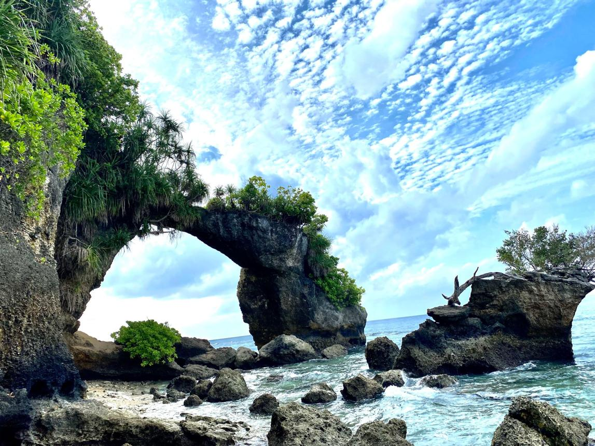

Neil Island
Experience the peaceful simplicity of Neil Island, a serene tropical destination known for its untouched beaches, crystal-clear waters, and relaxed island lifestyle. Unlike crowded tourist spots, Neil Island offers a slower pace of life where visitors can truly connect with nature and enjoy the calmness of the surroundings. Golden sandy beaches, natural rock formations, and shallow coral reefs create breathtaking coastal scenery perfect for relaxation and photography. The island’s peaceful atmosphere, combined with stunning sunrise and sunset views, makes it an ideal retreat for travelers seeking tranquility. Gentle sea breezes, lush greenery, and quiet pathways add to the island’s charm, creating a destination that feels untouched and naturally beautiful.